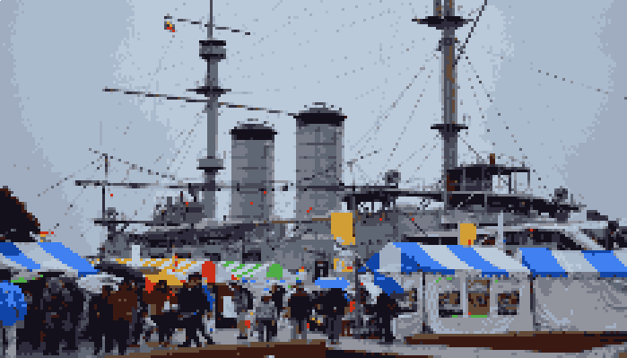
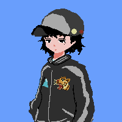
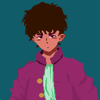
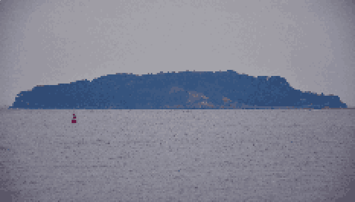
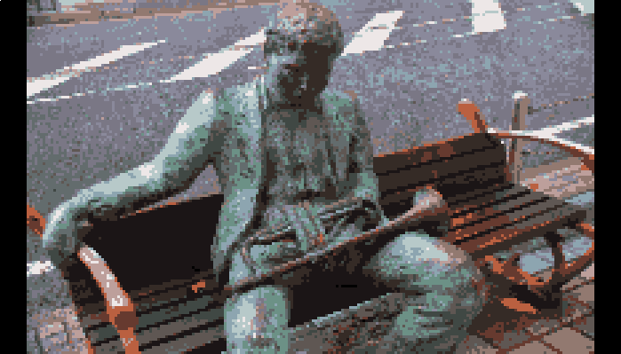
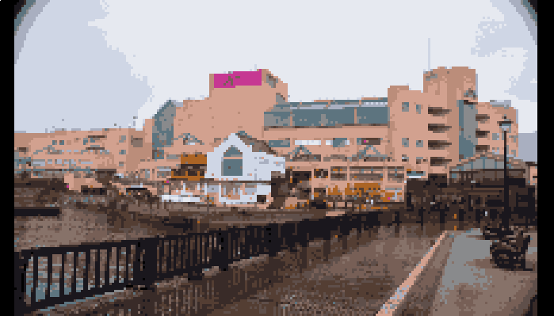
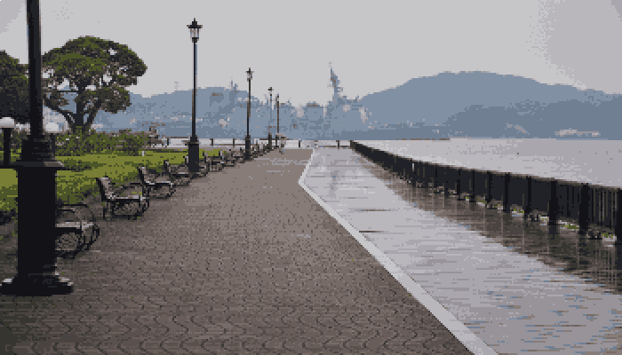
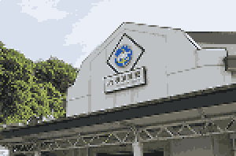

バショ 三笠公園


港ノヨーコ:ここは日露戦争で活躍した戦艦「三笠」が眠る歴史的な公園「三笠公園」。 入船料を払えば戦艦の中にも入れるのよ。毎年11月には産業まつりと言う横須賀の様々な企業がブースを設置してその仕事内容を紹介する祭りなど、今年2018年8月にはモバイルゲーム「pokemon GO」のイベントが開催されるなど…
港ノヨーコ:歴史的意義だけでなく、市民たちの集いの場としての役割も兼ね備えた需要なスポットなのよ。

是津キリオ: あそこに見えるのは？
ロケーション 猿島

港ノヨーコ:あれは「猿島」よ。東京湾最大の自然島で、かつては海軍の砲台が置かれ海上要塞として使われるなどしたことにより、いまだに昔のレンガでできた建造物が残っているので仮面ライダーのゲルショッカー基地などの撮影のために使われるなどするような美しい景観が魅力よ。
是津キリオ:なるほど、この三笠公園の桟橋から島まで行けるんだな。
港ノヨーコ:それじゃ今度は大滝商店街からどぶ板通りを通ってヴェルニー公園まで行きましょう。
三笠公園→大滝商店街→どぶ板通り→ヴェルニー公園



バショ ヴェルニー公園

港ノヨーコ:ダイエー……ではなくイオンの前を通って着いたこのヴェルニー公園は三笠公園とは違って落ち着いた、散歩やゆったりと船を眺めたりするのに適した公園よ。
是津キリオ:少し歩こう
バショ JR横須賀駅

港ノヨーコ:横須賀駅に着いたわ
ここから横浜駅へ帰れるわ
是津キリオ:
是津キリオ: いろいろ紹介してくれてありがとう
港ノヨーコ:あれっもう帰るの？（まだ公園しか紹介してないんだけど……）
是津キリオ:今日一日なんだかとても長かったような気がする…俺はもう満足だ。
港ノヨーコ:そう……そしたらまた明日、学校で
是津キリオ:サラバ…！！